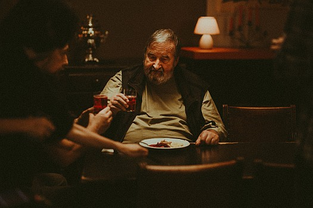
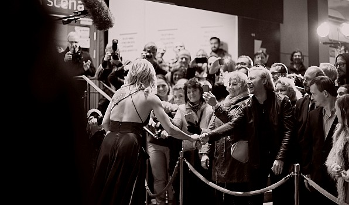
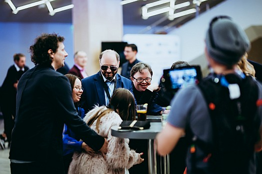
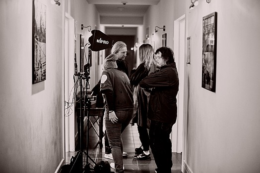
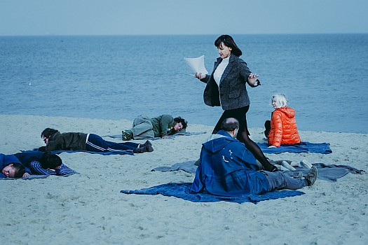
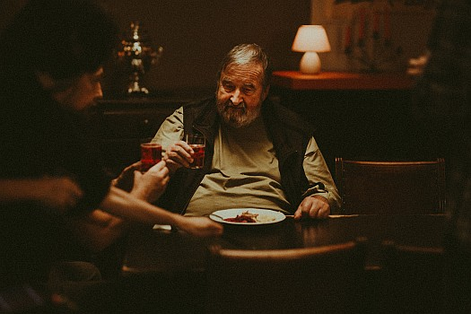
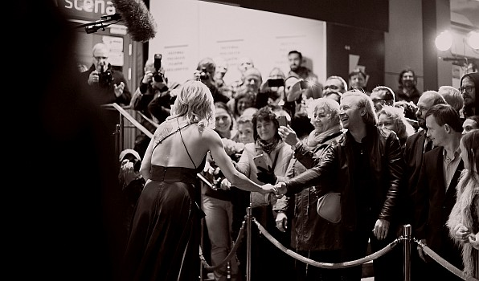
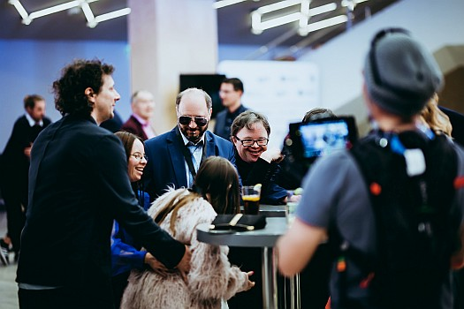
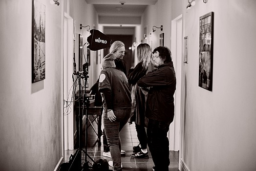
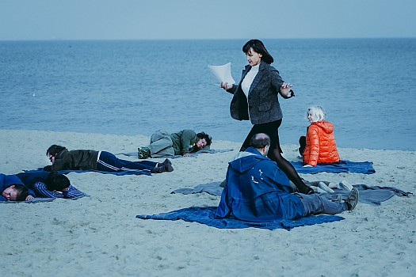

Zdjęcia: Gaba Kucz
Historia przedstawiona w filmie pt: "Amatorzy" w reżyserii Iwony Siekierzyńskiej nawiązuje do działalności gdyńskiego Teatru Biuro Rzeczy Osobistych, istniejącego od 1998 roku przy PSONI Koło w Gdyni. Członkami założonego przez Zbigniew Biegajło zespołu są osoby z niepełnosprawnością intelektualną.
Projekt zakłada zderzenie dwóch światów: zawodowych aktorów ze światem amatorów. Filmowa opowieść przedstawia próbę sił na teatralnej scenie. Konfrontuje ze sobą różne metody pracy, które mają doprowadzić do premiery "Hamleta" na deskach Teatru Szekspirowskiego.
Udział w produkcji wzięła również ekipa z Remontu Pomp z Gdańska, Teatr Ubogi Relacji z Sopotu oraz Teatru Przebudzeni z Ostródy. W filmie wystąpili znani aktorzy: Roma Gąsiorowska, Anna Dymna, Małgorzata Zajączkowska, Wojciech Solarz, Mariusz Bonaszewski oraz Krzysztof Kowalewski.
Zdjęcia do filmu kręcono w Gdańsku, Sopocie i Gdyni
Partnerami filmu są: miasto Gdynia, miasto Gdańsk, Telewizja Polska oraz Polski Instytut Sztuki Filmowej.
Produkcja: Autograf
źródło Teatr BRO
The story presented in the film "Amateurs", directed by Iwona Siekierzyńska, refers to the activity of the Biuro Rzeczy Osobistych Theater in Gdynia, existing since 1998 at PSONI Circle in Gdynia. The members of the team founded by Zbigniew Biegajło are people with intellectual disabilities.
The project involves a collision of two worlds: professional actors with the world of amateurs. The film story presents a test of strength on the theater stage. He confronts with himself various methods of work that are to lead to the premiere of "Hamlet" at the Shakespeare Theater.
The production was also attended by a team from Remont Pomp from Gdańsk, Teatr Ubogi Relacji from Sopot and Teatr Przebudzeni from Ostróda. Famous actors appeared in the film: Roma Gąsiorowska, Anna Dymna, Małgorzata Zajączkowska, Wojciech Solarz, Mariusz Bonaszewski and Krzysztof Kowalewski.
The film was shot in Gdańsk, Sopot and Gdynia
The film's partners are: the city of Gdynia, the city of Gdańsk, Polish Television and the Polish Film Institute.
Production: Autograf
source Teatr BRO